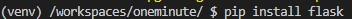
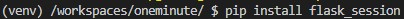
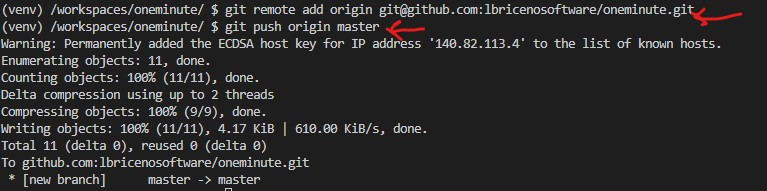

Crear un servidor de flask que permita registrarse a través de una página web.
Vamos a utilizar la plataforma de visual studio code en la nube code.cs50.io. En esa plataforma al igual que en Visual Studio Code de escritorio, se debe abrir una carpeta para ver los archivos, ya hay una abierta por defecto, pero dado que necesitamos usar github y esta carpeta tiene problemas, vamos a abrir otra.
Luego vamos a crear una carpeta llamada oneminute y en ella vamos a poner todos los archivos del proyecto en flask. Debe obtener una estructura como la siguiente:
Código
Application.py
Este es el archivo principal de la aplicación. La aplicación por ahora va a responder únicamente a la ruta /register.
La primera parte del código incluye los módulos necesarios, y define cosas como el link a la base de datos, y el formato que debe seguir una dirección de correo electrónico.
La siguiente sección del código define la ruta a la que se va a responder, y valida que los datos ingresados por el usuario sean válidos.
La última parte incluye la verificación de que las claves coincidan y genera el hash de la contraseña. Adicionalmente hace el llamado a la base de datos para incluir el nuevo usuario en la colección de usuarios.
register.html
Este template está diseñado para mostrar formulario para que el usuario ingrese sus datos.
index.html
Este template está diseñado para mostrar el resultado luego de lograr añadir un usuario nuevo.
Virtual environment
Para tener claras las dependencias de nuestro proyecto al momento de subirlo a una plataforma como Heroku se va a usar un entorno virtual. Esto permite instalar paquetes sólo para este proyecto.
Primero se debe crear el entorno virtual, y luego se debe activar:
Variables de entorno
Muchas veces no se quieren poner datos sensibles como contraseñas directamente en el código, o no se conocen los datos de antemano. Es posible definir variables en el sistema operativo que posteriormente pueden ser leidas desde python. Estas variables se llaman variables de entorno, y para darles un valor basta con escribir un comando.
En este caso vamos a definir cuatro variables de entorno: el usuario de la base de datos, la clave correspondiente, la variable FLASK_ENV que hace que flask esté en modo desarrollo, y la variable FLASK_APP que determina el nombre del archivo principal de la aplicación.
Dependencias
Es necesario instalar algunas dependencias para que la aplicación pueda ejecutarse.


Ejecutando el servidor
Para ejecutar el servidor vamos a usar el siguiente comando:
El servidor así estará corriendo en el puerto 5500 de la máquina en la nube. El problema es que no podemos acceder a ese servidor directamente. Se debe hace algo llamado port forwarding. Para hacerlo vaya a la pestaña ports, y luego escriba el número del puerto y presione enter.
Lo que esto va a hacer es generar una dirección que va a llevar al servidor en la nube. El link al que debe acceder para ver su servidor es el que está en la segunda columna de la imagen anterior.
El comportamiento de la aplicación debería ser como se muestra en las siguientes imágenes:
Si se prueba de nuevo pero con un correo repetido:
Control de excepciones
Como se pudo ver en el ejemplo anterior, no siempre van a salir bien las operaciones que se realicen con la base de datos. Por esta razón es importante encerrar estas operaciones en un bloque try except, que se encarga de probar, y si ocurre un error reacciona de manera apropiada.
Reemplazar el código del final por:
Lo que se obtiene ahora al tratar con un correo repetido es:
Publicación
Preparación para Heroku
Para publicar este servidor web vamos a usar la plataforma Heroku, la cual nos brinda una alternativa gratuita. Si no tiene una cuenta regístrese. Utilice un correo en el que pueda recibir emails de fuentes externas.
Debemos ajustar algunas cosas en la aplicación antes de poder publicarla en Heroku.
Cree un archivo llamado Procfile con P mayúscula, cuyo contenido sea el que se muestra en la imagen.
Instale el módulo Gunicorn, el cual va a ser el encargado de generar el servidor de manera más segura y robusta que flask por sí solo.
Genere el archivo con la lista de dependencias del proyecto.
Genere la lista de archivos que van a ser ignorados por git, de manera que no suban a github. Esto es útil especialmente porque la carpeta del entorno virtual es pesada, y esos módulos ya están en Heroku.
Para generar el archivo .gitignore, vamos a usar un servicio web que se encuentra en toptal. Vaya allí, y genere el archivo correspondiente al lenguaje python.
Copie todo el contenido de ese archivo y péguelo en un archivo llamado .gitignore junto al archivo application.py
Github
Vamos a subir la aplicación a github para luego subirla desde allí a la plataforma Heroku.
Cree un repositorio si aún no lo ha hecho.
Añada todos los archivos al commit que se va a hacer. Este comando va a ignorar los archivos que aparezcan en el archivo .gitignore.
A continuación haga el commit, ponga un mensaje descriptivo, este caso escribí commit inicial.
Cree un repositorio llamado oneminute en github.
SSH Para subir de manera segura sus archivos a github vamos a usar el protocolo SSH, el cual consiste en una serie de llaves con las cuales un dispositivo puede saber que está comunicandose con el computador correcto.
Genere una llave SSH desde cs50 code. Use el comando que se muestra, y en todas las preguntas simplemente presione enter.
Copie la llave pública: Para esto ejecute el comando siguiente, y copie lo que aparece.
Añada la llave SSH a su cuenta de github. Para esto tome el contenido del archivo key.pub y péguelo en el lugar correcto.
Añada el repositorio remoto y haga el push a este.

Después de aceptar los términos haga click en create new app
A continuación escoja un nombre descriptivo que esté disponible.
Conecte Heroku con su cuenta de github, y escoja el repositorio correcto. Luego habilite los Automatic Deploys.
El último paso es configurar las variables de entorno que habiamos configurado en el sistema operativo, es decir dbPass y dbUser:
Por último en la pestaña deploy haga click en deploy branch. Y luego abra su aplicación.